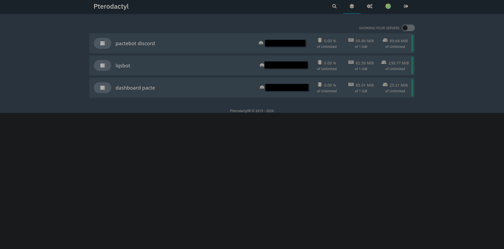

Ce projet utilise Pterodactyl pour héberger et administrer des serveurs web et des bots Discord sur un VPS. J’ai installé le panel et j’exécute un site qui fait office de dashboard pour le bot (avec bases MySQL) et bots Discord dans des conteneurs Docker isolés, gérés en ressources via le panel. Un reverse proxy Nginx avec SSL mutualise l’accès HTTP/HTTPS.
J’ai appris à déployer et configurer Pterodactyl sur un VPS, à créer des eggs personnalisés pour différents runtimes (PHP, Node.js, Python), à gérer l’isolation par conteneurs Docker, à sécuriser le serveur (UFW, Fail2ban, SSH) et à mettre en place un reverse proxy Nginx avec SSL. La finalité est d'avoir une plateforme centralisée et légère pour héberger et administrer facilement plusieurs services web et bots Discord 24/7, avec gestion fine des ressources, logs et redémarrages automatiques.
